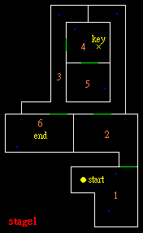
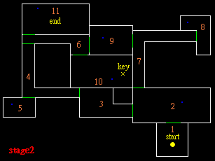
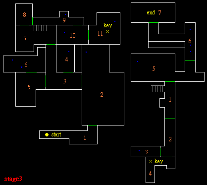
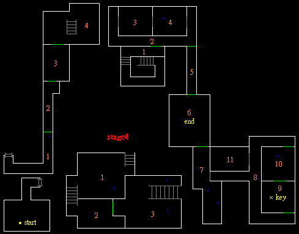
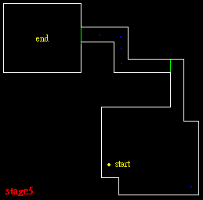

|
惡靈古堡～生存者２-----地圖攻略～Arcade Mode
|
| 此篇為Arcade Mode一般模式的重點攻略，設定為Difficulty：Normal、Time：Normal。
暴走時間：每一關都有設定所謂的「暴走時間」在螢幕上方倒數，時間一旦用完就會出現追跡者由後 方追來，如果玩家受到他的攻擊，可是會出現即死的畫面喔（看到追跡者要小心閃躲攻擊才行）。 地圖上的藍點為道具的所在地，Files並沒有標出。編號僅為地圖解說用。 Stage1 Prison---脫出 暴走時間：3minutes 頭目：大蜘蛛  １在開始的地方有好幾隻僵屍，左轉解決一隻就可以離開，這裡的兩個道具皆為來福槍 / 機關槍。 ２的路上有一隻僵屍犬、兩隻僵屍。 ３右側死路盡頭有來福槍 / 機關槍，但是實在沒必要拿，左側盡頭是急救箱和幾隻僵屍。 ４有三隻僵屍、鑰匙、麥林手槍 / 榴彈槍，這裡的武器是用來打頭目的。 ５看似平凡無奇，走到底有兩隻僵屍衝出，退後解決後左轉再解決兩隻，打破箱子可以拿到寶石（紅 ）。 回到４時衝出一隻獵人，不用理他。 頭目戰：大蜘蛛相當的笨重，只要遠離他不停的狂轟，很快就可以獲勝。 File位置：３右側死路盡頭的牆上「FIVE」 追跡者暴走起始點：２
Stage2 Official Residence---迷走 暴走時間：4minutes 頭目：獵人  １有四隻僵屍，直直衝過去，不要浪費時間。 ２擺放著10個箱子，左側6個藏有三隻僵屍犬，右側三個擊破後，可以拿到最右側箱子裡的寶石（藍 ），不管要走哪一條路，只要擊破最右側三個即可。 ３僵屍三隻。 ４一進門先把僵屍犬解決，轉彎會遇到利卡。 ５這小小空間駐守一隻Bander，有麥林手槍 / 榴彈槍。 ６三隻僵屍、一隻利卡。 ７蜘蛛三隻。 ８僵屍兩隻、Bander一隻，來福槍 / 機關槍。 ９僵屍六隻、散彈槍。 １０兩隻Bander守護鑰匙，先解決一隻以免被夾擊，木箱裡有急救箱。 頭目戰：獵人難纏了一點，不過附近的木箱裡存放著來福槍 / 機關槍，到手再一決生死。 File位置：８桌上「JEWEL」 追跡者暴走起始點：８
Stage3 Training Camp---不安 暴走時間：5minutes 頭目：Alexander  這個關卡分為兩個樓層，而且鑰匙有兩把，除了地圖複雜外，敵人也有點棘手。 一樓： １解決兩隻僵屍再前進，到轉角的地方會有Bander爬上來，直接離開。 ２僵屍犬兩隻、Bander一隻，角落有四個木箱，打破外面兩個有來福槍 / 機關槍，最裡面 那個小心 不要打破，有獵人埋伏。 ３利卡一隻要解決，因為出口有僵屍守著，僵屍的酸液攻擊距離很遠要小心。 ４只有一隻獵人，獵人身上有散彈槍。 ５兩隻獵人。 ６經過５才能到，有一隻僵屍，下面的木箱裡有麥林手槍 / 榴彈槍 ，打破水池旁兩個木箱中較外面的 那一個有急救箱，裡面那個是獵人。 ７兩隻蜘蛛。 ８僵屍三隻。 ９僵屍三隻，木箱裡有急救箱。 １０這裡要小心，前面有Bander，後面有僵屍，入門後衝向Bander的方向不停開槍，很有機會賺到一 個Critical，之後再回頭解決兩隻僵屍，木箱裡有麥林手槍 / 榴彈槍。 １１進門先往右擊倒一隻獵人，再解決另一隻，最後解決距離最遠的Bander，鑰匙在牠身上，木箱裡 有散彈槍。 二樓： ２天花板上有一隻吸腦怪蟲。 ３僵屍三隻、來福槍 / 機關槍。 ４進門就看到鑰匙，拿到後轉身打倒門左側的兩隻僵屍。 ５先往右打倒僵屍和僵屍犬，再從遠處將左側的Bander擊倒，左側底木箱中有寶石（綠）。 ６武器補給的地方，依序是散彈槍、來福槍 / 機關槍、麥林手槍 / 榴彈槍，往７的門的對面有一隻 Bander，雖然被阻隔過不來，但是牠的手足夠攻擊玩家了，經過時不要停頓。 頭目戰：這關的頭目一次來三隻，建議先集中火力幹掉兩隻Bander，在清除他們的同時遠離亞歷山大 ，只要離他夠遠是不會受到傷害的，他散發毒氣時正面是安全的，解決完Bander後再使用打 帶跑戰術，遠距離攻擊即可。 File位置：二樓３打字機「25MIN」 追跡者暴走起始點：二樓３
Stage4 Private Residence---焦躁 暴走時間：0 頭目：Alexia第一型態  一開始就被追著跑，但是一定要保持冷靜，好好的判斷情勢才行喔。 一樓： １由地下一樓上來後，有兩排箱子擋路，最好走右側的箱子，左側最後一個箱子是一隻僵屍犬，右側 最後一個箱子是急救箱，不要跑太快而沒拿到。 ２直走道，會竄出兩隻獵人，不要停下腳步，邊跑邊開槍，Critical的機率很大。 ３兩隻獵人，原地擊倒後再前進。 ４先前進幾步打倒Bander，後面有兩隻僵屍夾擊，不要回頭直接上樓。 二樓： １廣場有兩隻伏地的僵屍，木箱中有急救箱， 要拿的話小心不要被埋伏的獵人逮到，直接上樓。 ２Bander爬上來，離開的門口又有一隻僵屍， 不要停留，跑到Bander處再開始轉彎以免被僵屍咬。 ３樓梯左右的箱子裡都是來福槍 / 機關槍，建議不要去拿。 三樓： １這個迴廊有兩隻Bander，擊倒後再前進。 ２安全的路線是擊倒一隻利卡後直接往５，左轉的話有兩隻僵屍。 ３不需要來，僵屍七隻。 ４獵人一隻、 麥林手槍 / 榴彈槍。 ５僵屍四隻，至少打倒左或右的兩隻後前進。 ６大蜘蛛一隻，一定要打倒後前進的門才會打開，在這裡因為等下要回來，所以暴走time設定為 2minutes，戰鬥時不計時。 ７急救箱一個，裡面有僵屍，最底部有寶石（紫） ，出來時小心埋伏。 ８利卡四隻，一樣用邊跑邊攻擊的方式以免被夾擊。 ９拿到鑰匙後蹦出兩隻獵人，建議走原路回，不要往１０。 １０沒必要來的地方，兩隻吸腦怪蟲、 麥林手槍 / 榴彈槍。 １１Bander兩隻。 頭目戰：難纏的不得了的Alexia，不停有僵屍犬跑出來做掩護，因為僵屍犬打不完，所以沒必要對牠 們浪費時間，太過接近Alexia就要趕快跑開，要把握連續射擊的時機。 File位置：三樓１１打字機「NEMESIS」 追跡者暴走起始點：Start處
Stage5 Airport---死鬥 暴走時間：5minutes 頭目：Tyrant  第五關時間充裕，而且除了頭目沒有其他敵人。 一開始的地方右邊木箱裡有寶石（灰）。 走廊上分別是Shotgun、來福槍 / 機關槍、Magnum / Grenade Gun、急救箱。 頭目戰：速度極快的Tyrant，不要幻想遠距離攻擊，如果離他太遠的話會受到他的快速移動爪擊，最 好和他保持約兩個身長的距離攻擊，當他做出單腳跪下的動作時一邊攻擊一邊後退離開他的 攻擊範圍。 File位置：一開始的旋轉木馬「KILL」 Extra遊戲之外─── 在這五關中如果將所有的寶石都拿到手了，那麼打倒Tyrant之後就必須和追跡者決戰，追跡者的火箭 砲攻擊是一擊必殺，趕快先取得場中央的強力武器，以圍著追跡者繞圈圈的方式攻擊，冷靜地把他解 決。
破關動畫雖然不好看，勉強看看吧～ |
惡靈深淵Biohazard Abyss http://98.to/coolbio